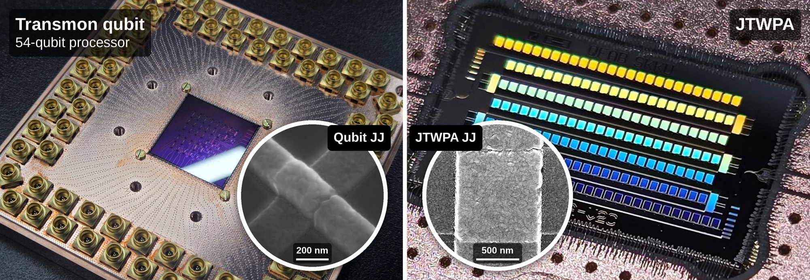

Abstract
- 1SKKU Advanced Institute of Nano Technology (SAINT) Sungkyunkwan University, Suwon 16419, Korea.
- 2SKKU Advanced Institute of Nano Technology (SAINT) and Department of Nano Engineering, Sungkyunkwan University, Suwon 16419, Korea.
- 3Department of Quantum Information Engineering, Sungkyunkwan University, Suwon 16419, Korea.
The Josephson junction, a dissipationless nonlinear inductive element based on Cooper-pair tunneling, is a fundamental building block of various superconducting circuits, including qubits and parametric amplifiers (Fig. 1). We demonstrate transmon qubits composed of niobium electrodes and aluminum Josephson junctions on a silicon substrate, exhibiting energy relaxation times (T1) of up to 582 μs and Hahn-echo coherence times (T2E) of up to 801 μs. We further extended this process to a 54-qubit heavy-hex processor in a fully planar layout with airbridge crossovers, and characterized its single- and two-qubit gates. The Josephson traveling-wave parametric amplifier (JTWPA) is widely used as the first-stage amplifier for qubit readout, as it provides near-quantum-limited, high-gain amplification over a wide instantaneous bandwidth. In this work, we designed and fabricated JTWPAs, and analyzed their wafer-scale yield and performance. Of the 33 devices fabricated on a single wafer, 15 were excluded during visual pre-screening due to unintended shorts or opens. We measured the remaining 18 JTWPAs, 17 of which showed gain exceeding 18 dB across the 6.5-7.5 GHz band used for qubit readout. This corresponds to a yield of 94% among the measured devices, indicating that visual inspection is effective for identifying the working devices.
